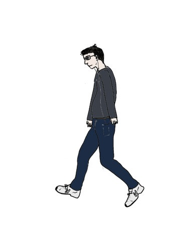

Poetle

Guess the poet given some quotes from them.
The quotes (are supposed to) get more popular every time you guess wrong.
- Some of the data might be broken; let me know if you see an answerline that's not actually a poet or a quote that doesn't belong to the poet in answer etc.
- French characters are broken and will stay so.